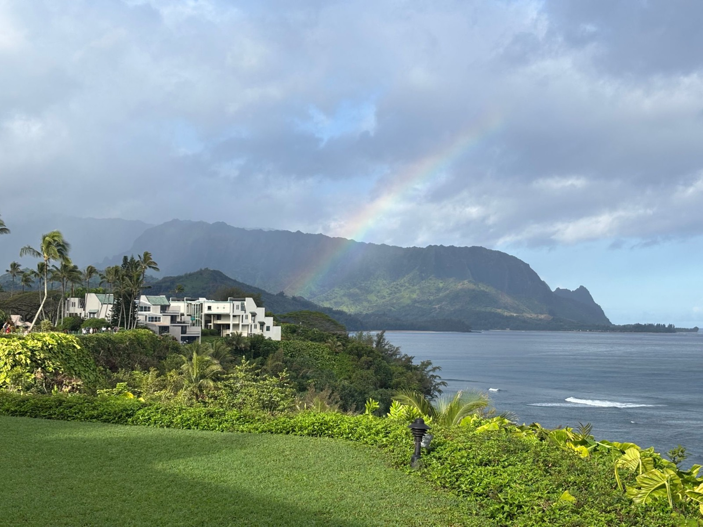
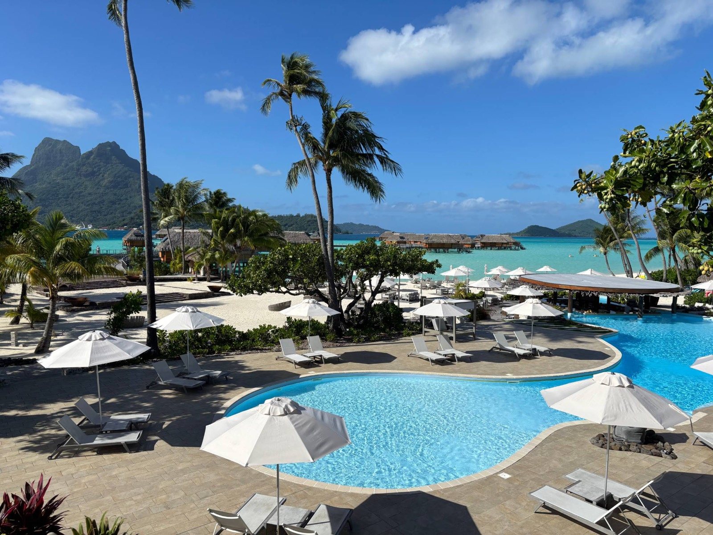
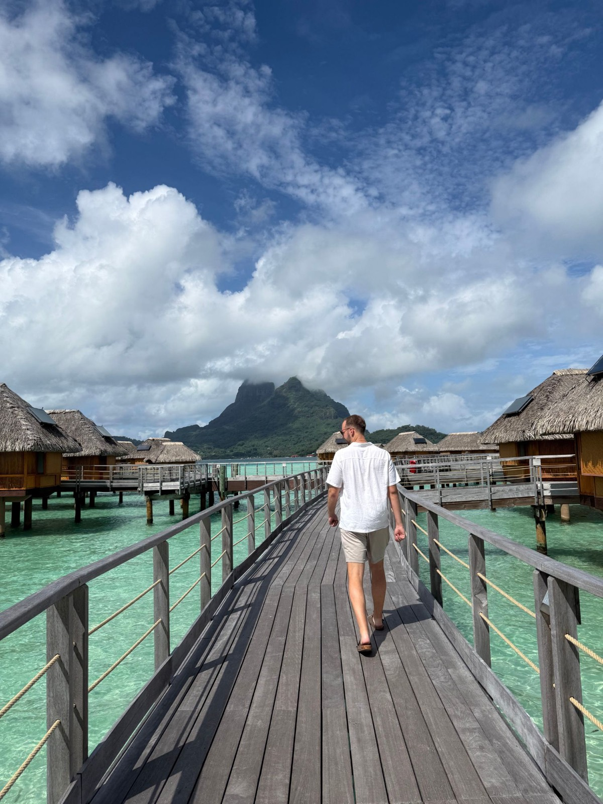
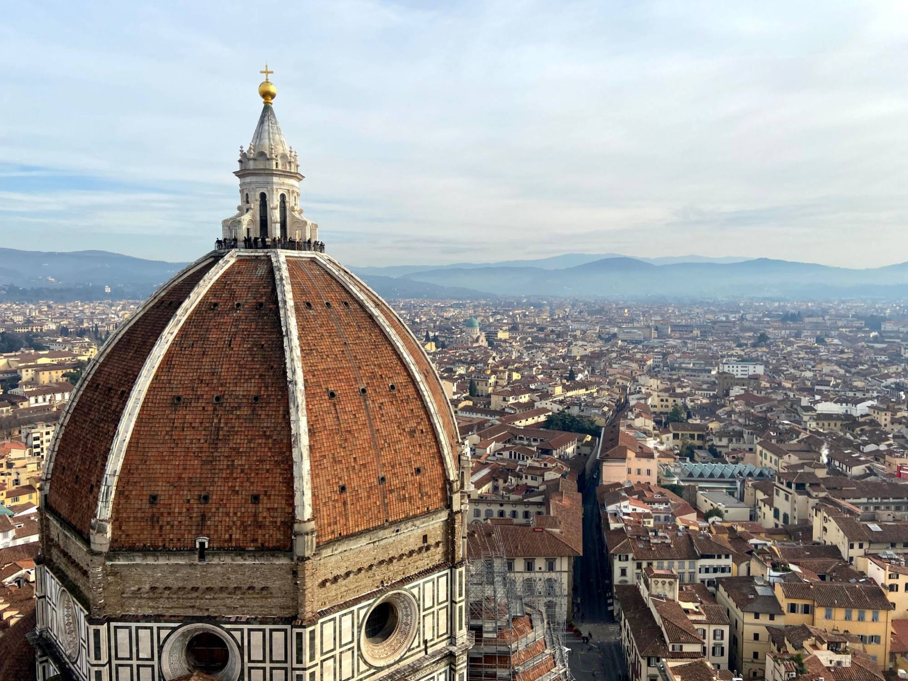
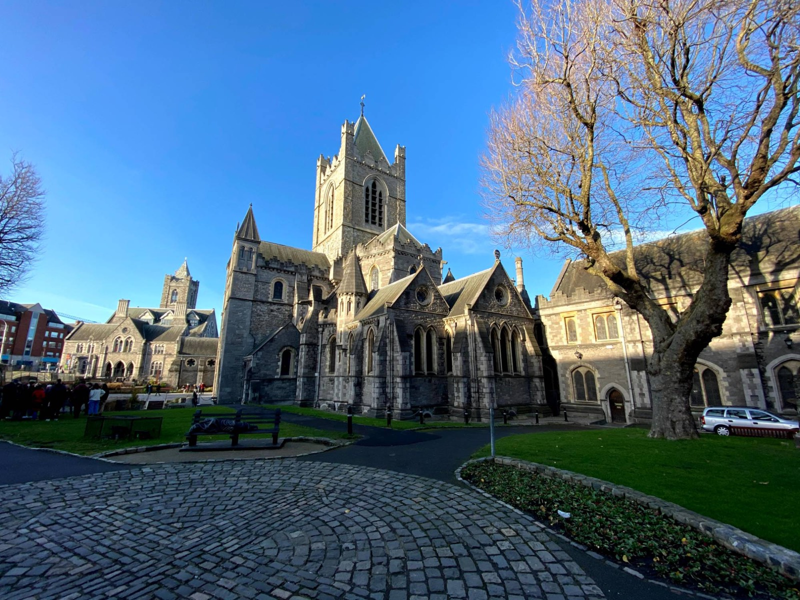
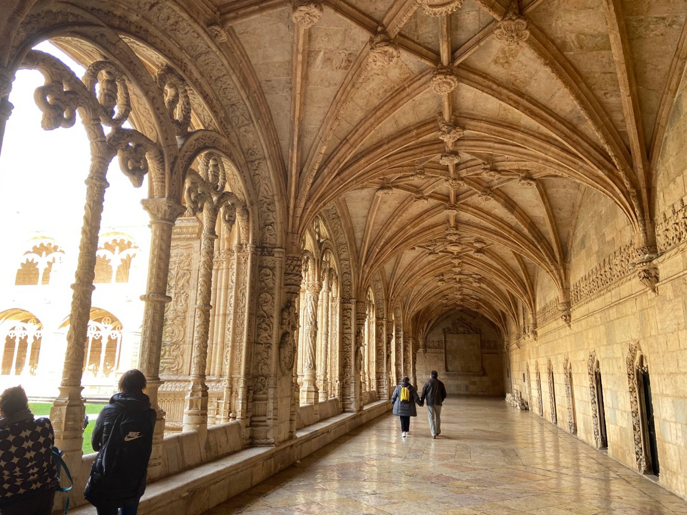
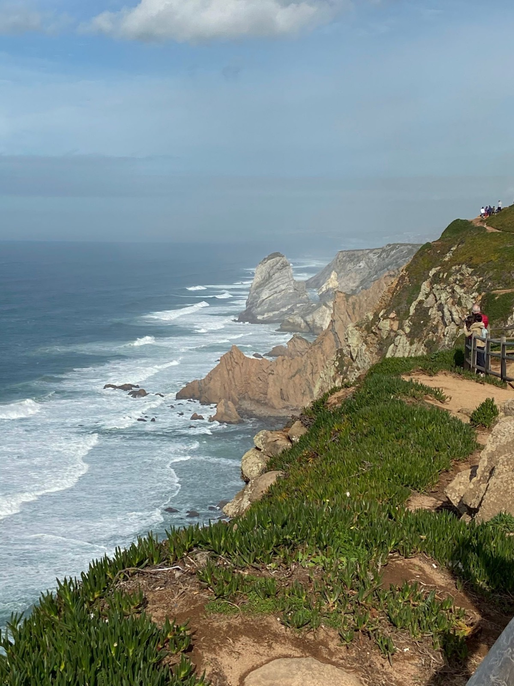

Planned by a Royal Oak, Michigan Travel Agent
Top Travel Destinations
Hawaii, Bora Bora, Italy, New Zealand, Ireland and Portugal: the places Myles loves to plan, and the logistics that make each one run smoothly.
Every trip from Myles Away Travel is planned one-on-one, so these destinations are starting points, not packages. Pick a place below, or tell Myles where you want to go and he will build the trip around how you like to travel.

Hawai'i Destination Expert
Hawaii Travel Planning
Hawaii is really several destinations: Kauai, Maui, Oahu and the Big Island each have their own personality. As a certified Hawai'i Destination Expert, Myles helps match the island, or the combination of islands, to the trip you want.
Then comes the part that makes it feel effortless: inter-island flights, rental cars, lodging, and the tours and dinner reservations that book out early.
- Choosing and ordering islands for your dates and interests
- Inter-island flights, rental cars and transfers
- Activities, hikes, tours and dining worth planning ahead for



French Polynesia
Bora Bora & French Polynesia Travel Planning
Overwater bungalows, a turquoise lagoon and Mount Otemanu on the horizon. Bora Bora looks effortless, but getting there usually means international flights to Tahiti, a domestic flight, and a boat transfer to your resort.
That kind of multi-leg logistics is exactly what Myles specializes in, along with deciding which resorts, islands and add-ons are worth the splurge.
- Flights, island hops and boat transfers lined up end to end
- Resort and bungalow comparisons by budget and style
- Pairing Bora Bora with Moorea, Tahiti or other islands

Italy
Italy Travel Planning
Florence, Rome, Venice, Tuscany and the Amalfi Coast are all within reach of each other, but the best Italy trips are sequenced carefully: which cities, in what order, by train or by car, and how many nights in each.
Myles builds the route, books the stays, and lines up timed-entry tickets and reservations for the sights that sell out.
- City-by-city routing and train or car logistics
- Timed tickets and dining reservations for popular sights
- Day trips and food and wine experiences matched to your style

New Zealand
New Zealand Travel Planning
Waterfalls, volcanic landscapes, fjords and mountains: New Zealand rewards travelers who plan the route well. North Island, South Island, or both, the distances are bigger than they look and the seasons run opposite to the Northern Hemisphere.
Myles plans the driving days, the inter-island travel and the stays, so you spend your time outside instead of on a map.
- North Island and South Island route planning
- Rental car or campervan, ferry and flight logistics
- Timing your trip to the season and the activities you want

Ireland
Ireland Travel Planning
Dublin, the Wild Atlantic Way, the Cliffs of Moher, the Ring of Kerry and castle stays: Ireland is made for road trips, and made easier with a plan. Driving on the left, narrow country roads and small-town lodging all benefit from some advance thought.
Myles helps you choose the route, the stays and the experiences, and sorts the rental car and transfer logistics.
- Route planning from Dublin and around the coast
- Rental car, driver or train options
- Castles, inns, pubs and experiences worth booking ahead


Portugal
Portugal Travel Planning
Lisbon, Porto, Sintra, the Douro Valley and the Algarve coast pack a lot into a compact country, with good trains, great food and wine, and a lot of value compared with much of Europe.
Myles puts the pieces in order, from how many nights each city deserves to how to get between them, and finds the stays and experiences that fit your budget.
- Lisbon, Porto and coastal routing by train or car
- Douro Valley and wine country experiences
- Hotels and day trips matched to your travel style
Don't See Your Destination?
Myles plans trips well beyond this list. Tell him where you want to go and he'll take it from there.
Start Planning Your Trip